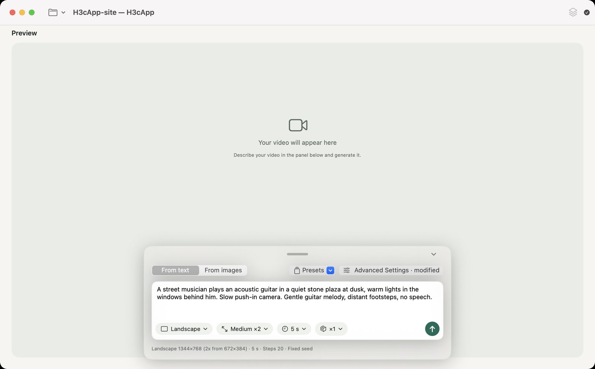

Getting started
Install the app, get the AI model, and make your first video, step by step. No Terminal needed.
Button names below are as they appear when macOS is set to English; the app follows the system language (English or Japanese).
1. Install the app
- Check your Mac. In the Apple menu, open “About This Mac” and confirm the chip is “Apple M…” and macOS is 15 (Sequoia) or later. Intel Macs and macOS 14 or earlier will not work.
-
Download the DMG. Open the latest release page and, under Assets, click
H3cApp-0.5.0.dmg(about 19.1 MB; the number changes with the version). The files labeled “Source code” are for developers, not for installing. - Open the DMG. Double-click the downloaded DMG file; a window with the H3cApp icon opens.
- Copy the app to Applications. Drag the H3cApp icon onto “Applications”. If an older version is there, replace it.
- Launch the app. Double-click H3cApp in the Applications folder. H3cApp is notarized by Apple. If a warning appears at launch, see Troubleshooting.
That completes installing the app. You can't make videos yet, though: the AI model comes next.
2. Get the AI model
H3cApp uses MiniMax H3, a video generation model released by MiniMax. The model is not part of the app, so you download it once at the start.
Before downloading, check the model's license. MiniMax H3 comes under its own, somewhat unusual license, the MiniMax H3 Community License, separate from the app's MIT License. It differs from typical open-source licenses: for example, it only applies in certain regions. The key points are in Licenses and terms; the exact terms are in the full license.
Start when you have time and disk space to spare. “FL2VA”, used to generate from text and from first/last images, is about 144.1 GB on its own (shown in the app as about 134.2 GB). Depending on your connection it can take several hours or more.
To use less disk space, a quantized model (GGUF) works too. From v0.6.0 you can download and use a quantized model of about 35–45 GB instead of the official one. See Using GGUF (quantized) models.
If no model is registered when H3cApp starts, a window titled “Download the MiniMax-H3 Model” opens.
To download
-
Choose where to save it. “Save to” starts at
~/Library/Application Support/H3cApp/MiniMax-H3on the internal disk. To use another disk, pick a folder with “Change…” (a MiniMax-H3 folder is created inside it). The model is read during generation, so disk speed affects generation time; an external disk is not necessarily as fast as the internal SSD. - Decide which models you need. At first, we recommend leaving “Also include Ref2VA (reference images and videos; roughly doubles the size)” off. You can add the reference images/videos/audio feature later.
- Click “Check Size…”. After it checks the Hugging Face file list, the real total appears, for example “134.2GB in total (81 files)”. Make sure the destination has enough free space.
- Click “Start Download”. Progress, file count and speed are shown. If you “Cancel” or the connection drops, it resumes where it left off next time. If it fails, click “Resume”.
- When “Download complete.” appears, click “Done”. The model is registered and starts loading.
If you already have the model
If you already have a MiniMax-H3 folder containing FL2VA (and optionally Ref2VA), choose it with “Add Folder…” in the download window to register it without downloading.
Downloading later, or adding Ref2VA
“Later” closes the download window. To download later, use “Download and Add…” in “Model Manager” (the stacked-squares icon at the top right of the window).
To add Ref2VA later for reference images, videos and audio (from v0.6.1), choose the model's “…” → “Add Ref2VA…” in “Model Manager” (shown only for models without Ref2VA). For an official model, only the DiT weights and settings that differ from FL2VA (about 66 GB) are downloaded from the official model; the rest (text encoder, VAEs and so on) is cloned from the model's FL2VA, which takes no extra space on the same disk. For a GGUF model, download a Ref2VA DiT GGUF from Hugging Face or pick a file you have (GGUF page). A stopped download resumes where it left off. Afterwards, for the M5 fast mode, build the int8 cache for reference images with “Build Cache…” in Advanced Settings.
Is it ready?
Check the status icon at the top right of the window.
| Icon | Label | Meaning |
|---|---|---|
| Hourglass | Preparing the model | Loading. Wait a moment. |
| Checkmark | Ready | You can generate. |
| Warning triangle | Model not found | No model registered, or its folder moved. See Troubleshooting. |
Click the icon to see the model in use and any load error.
3. Check the compute mode
The compute mode decides how the model is loaded and computed. Open “Advanced Settings” at the top right of the panel (or press ⌘,) and look at “Compute mode”. To begin, the mode the app picked is fine.
| Your Mac | Mode | What to do |
|---|---|---|
| M5-class GPU | Fast (int8 cache) selected by default |
Once, build the cache with “Build Cache…” (about 19.3 GB, stored on the internal disk in ~/Library/Application Support/H3cApp/cache). Generating before that shows “The int8 cache wasn't found”. |
| Other Apple Silicon | Low memory (SSD streaming) selected by default |
Works as is, with no cache. It needs less memory but takes longer. |
| A Mac with lots of memory | Resident (for plenty of memory, no cache) | Loads the whole model into memory. The app shows a warning below 32 GB of physical memory on an M5-class Mac, or below 64 GB on others. It is not a mode for Macs with little memory. |
To use the reference images/videos/audio feature (Ref2VA) with “Fast (int8 cache)”, build a separate Ref2VA cache too (another 19.3 GB or so). How this differs from the speed setting and “Fast mode (experimental)” is explained in the three speed settings.
When the status icon shows “Ready” and the compute mode is set up (cache built on an M5-class Mac), you are ready for your first generation.
4. Make and save your first video
Start with one small 5-second video to make sure everything works.

- Make sure the status icon shows “Ready”.
- In the switch at the top left of the panel, choose “From text” (selected by default).
-
Copy the example prompt below and paste it into the prompt field.
You can also select the text and press ⌘C.
This is just an example input; it won't necessarily give the same picture or sound.
- Below the prompt field, set “Shape” to “Square”, “Size” to “Small (256×256)”, “Length” to “5 s”, and the video count to “×1”. Size starts at “Medium (512×512)”, so change it to Small.
- Leave “Advanced Settings” at the top right of the panel as it is.
- Click the up-arrow (↑) button at the bottom right, or press Enter in the prompt field, to start (Shift+Enter adds a line).
- While it runs, the preview shows progress, elapsed time and “About … left (done around …)”. At first it says “Estimating the time left…”. On the author's M5 with 24 GB, this setting took 1 min 44 s.
- When it finishes, the video appears in the preview. Play it with the play button (▶) and check the sound too.
-
Save it, in one of two ways:
- “Export Video…” (⌘S): saves an MP4 wherever you like; it starts in Downloads. The save panel chooses whether to put “AI-generated with MiniMax H3” in the lower right (on by default) and whether to record the prompt and generation settings in the video's metadata (on by default).
- “Save as Project…” in the project menu (folder icon at the top left): name it, and the current prompt, settings and this video are saved together in
~/Movies/H3cApp/<name>.
Without an open project, the video is a temporary file. If you don't export it or save it as a project, it is deleted when you generate the next one.
Well done. Next, try the Medium size or make a video from an image. Continue to the Guide.